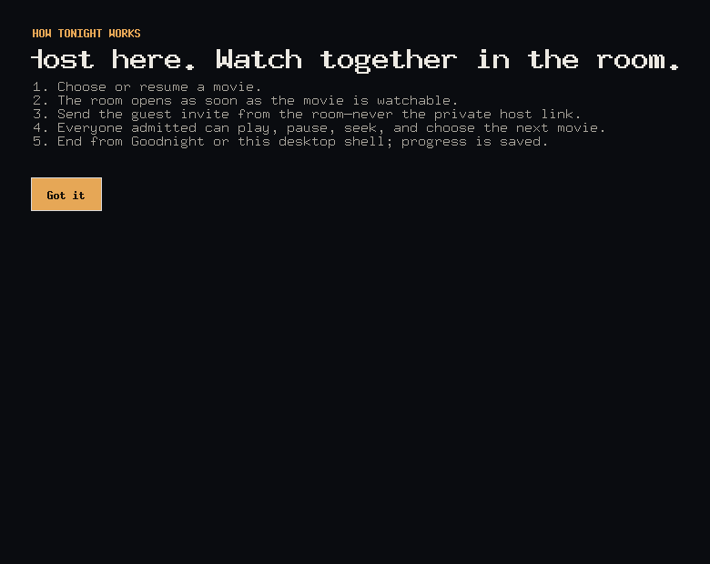

Windows
Windows 10 or 11, 64-bit
A normal per-user installer with Start menu and optional desktop shortcuts. No Docker or Python.
View Windows downloadOfficial downloads
Host a synchronized movie from your desktop. Send one private link. Guests install nothing and create no account.
Checking the latest release…
Windows
A normal per-user installer with Start menu and optional desktop shortcuts. No Docker or Python.
View Windows downloadLinux
Use the AppImage, or the portable tar fallback where AppImage/FUSE is unavailable.
View Linux downloadmacOS
We will not disguise an unsigned, unnotarized build as a normal one-click Mac install. Docker/source remains an advanced fallback.
Before running
Windows may show Unknown publisher or SmartScreen. Download only from this page. Compare the SHA-256 manifest to detect a changed or incomplete file.
A checksum verifies file integrity; it does not establish a legal publisher identity.
What happens next

Docker and source remain supported for technical hosts and as the temporary macOS fallback. The Linux portable tar is available beside the AppImage.